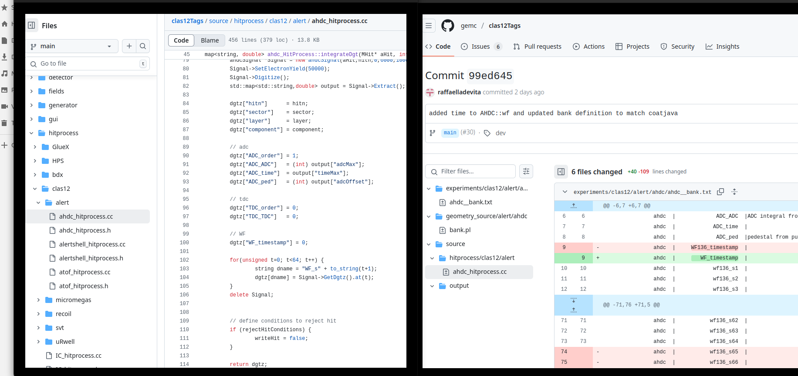

DATE → 25-04-02
(25-04-02 16:50:50) Note, reconstruction (time2distance)
Here is a link to another detector. It gives an example of procedure to read calibration constant. link
(25-04-02 16:19:35) Note, reconstruction
We have two DOCA. One computed from the time, that needs t0 and time2distance and used in FreClusterFinder, and another one estimated by the Kalman Filter. Now the residual could be the difference between the two DOCA. Before, it was compared to the DOCA from simulation.
(25-04-02 15:55:53) clas12Tags/(gemc)/source updated
No need to update gemc by reducing the number of samples, a commit made by Raffaella already use coatjava notation in gemc. Link. 
(25-04-02 15:08:46) Implement the doca in reconstruction, t0, time2distance, protection
Until now, the doca is obsiouly wrong. We need to use the t0 and apply a time2distance to the corrected code. We also need to distinguish real data and simulation data.

(25-04-02 11:51:17) Add adcMax hist in time1D tab of mon12
Fix count issue (e.g ToT) and add adcMax hist. Run 21042

(25-04-02 11:29:16) Add new tab in mon12 for 1D time histograms
Add 1D histograms for timeMax, leadingEdgeTime, constantFractionTime, timeOverThreshold, wftime. Run 21042

(25-04-02 10:40:58) Add a 2D hist for wf::time in mon12
Issue fixed. The cut on the last layer has been changed. Run 21042

(25-04-02 10:29:02) Add a 2D hist for wf::time in mon12
The first channel time, AHDC::wf --> time is now plotted in the AHDC time tab. Run 21042. We can notice an issue. The layer 8 is not filled. This is due to a cut made during the last pull request, I guess.

(25-04-02 10:26:03) Move ToT in charge tab of mon12
Because the timeOverThreshold is related to the charge, i.e adcMax or integral. Run 21042

(25-04-02 09:09:03) Connection to ifarm changed
Connection to the ifarm changed. Now, you are using a new pin for the double authentification. Guess what ?